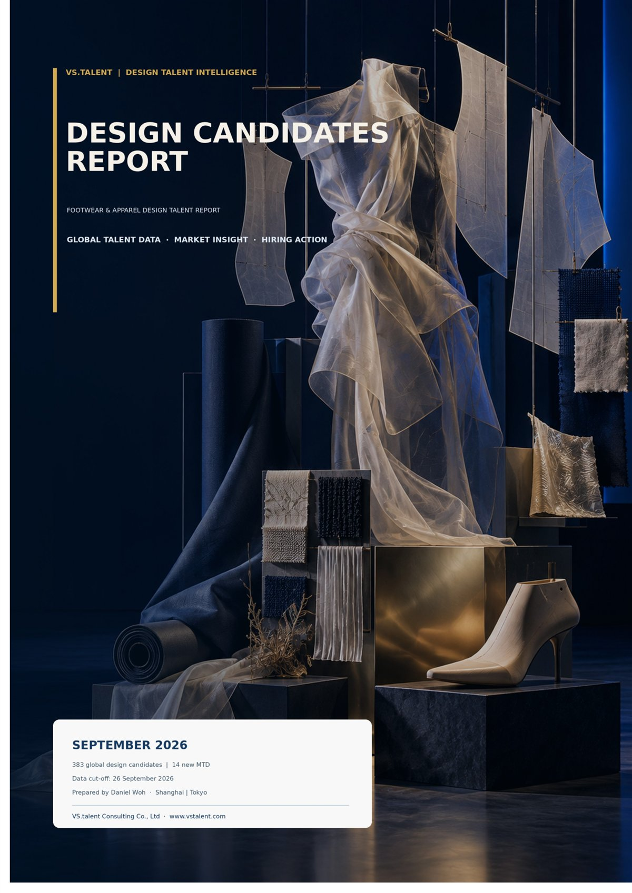

Leading Brand Ecosystems · September 2026
242 unique candidates (63.2%) have experience at one or more Top 10 brands. adidas remains the largest talent ecosystem with 107 candidates (27.9%), ahead of Nike (37), Puma (29) and The North Face (29).
Monthly Intelligence
Updated Monthly. Footwear and apparel design talent — 383 professionals in the current pool.
adidas leads with 107. Experienced talent remains concentrated in mature brand ecosystems.

Latest Intelligence
Updated Monthly
Updated Monthly
Brand ecosystems, mobility and compensation, from the September pool. Nationality, destinations and compensation continue on Insights.
Interactive Charts
Five views. The briefing continues on Insights.
Leading Brand Ecosystems · September 2026
242 unique candidates (63.2%) have experience at one or more Top 10 brands. adidas remains the largest talent ecosystem with 107 candidates (27.9%), ahead of Nike (37), Puma (29) and The North Face (29).
Global Nationality Distribution · September 2026
American designers lead at 123 (32.1%), followed by Korean talent at 51 and Chinese talent at 49. The Top 10 nationalities represent 93.5% of the pool (358 of 383).
Preferred Work Destinations · September 2026
China received 156 destination selections (40.7%) and Japan 121 (31.6%), extending a dual centre for design talent mobility in Asia.
Cross-border Talent Mobility · September 2026
Of 248 cross-border selections, China received 105 and Japan 103. US to Japan (39) and US to China (28) lead. 193 eligible candidates (51.5%) will consider a cross-border move.
Salary Distribution · September 2026
Based on 114 valid salary records (29.8%). The US median is about USD 221K among larger samples. China, Germany and Korea sit lower, and smaller samples should be read as directional.
Key Insights
International design talent is willing to move. Luxury additions need a transferability check before a China role is treated as a fit. The briefing continues on Insights.
Monthly Intelligence
Updated Monthly. Shared upon request.
Updated Monthly
Market Intelligence
September covers 383 design professionals, 14 more than August. Additions are concentrated in apparel and Luxury. The archive and the longer reading are on Insights.
Full monthly reports are shared upon request with hiring managers, HR leaders and selected industry partners due to candidate confidentiality.
Request Talent Mapping
Named org charts and design talent landscapes, used to inform search strategy before a mandate is briefed.
Services
Search, intelligence and creative support. Detail lives on Services.
01
Global design leadership hiring across footwear, apparel, graphics, CMF and innovation.
02
Monthly market intelligence and talent analytics from VS.talent's proprietary candidate database.
03
Freelance designers, consultants and creative project support from our global design network.
About VS.talent
Search, mapping and monthly intelligence from one specialised view of the design talent market. Why that focus produces deeper judgment continues on About.
Contact